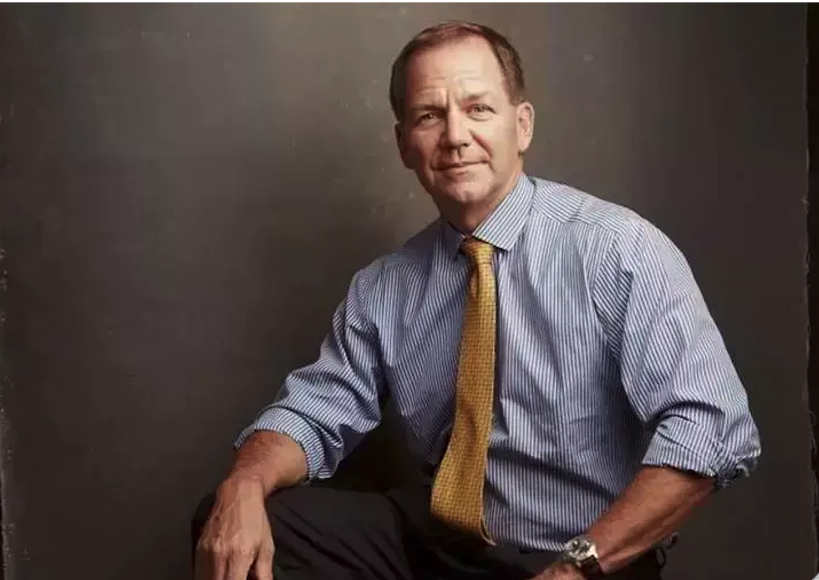

Самая важная вещь для меня - не терять деньги. Я пережил множество рынков и каждый раз убеждался, что если вы теряете мало, то рано или поздно окажетесь правы и заработаете много. Я не думаю о том, сколько могу заработать. Я думаю о том, сколько могу потерять. Моя первая задача - защитить капитал. Я никогда не позволяю одной сделки или одной идеи стоить мне слишком дорого. Вы не можете контролировать, куда пойдет рынок, но вы можете контролировать размер своей потери. И это единственный настоящий контроль, который есть у трейдера.
Я всегда предполагаю, что могу ошибиться. Если рынок движется против меня, я не пытаюсь доказать свою правоту. Я уменьшаю позицию. Самая большая ошибка трейдера - это эмоциональная реакция на убыток. После серии неудач я снижаю риск, уменьшаю объемы и возвращаю себе ясность мышления.
Комментарий Дмитриева Р.
Это модель поведения всех взрослых трейдеров. Новичок после серии стопов: увеличивает риск, хочет "отбить", входит чаще, давит сильнее. Профи после серии стопов: снижает объем, уменьшает частоту, анализирует, возвращает контроль. Это ключевой момент. Серия убытков - это тест характера трейдера. Сильный трейдер в плохой фазе становится осторожнее. Слабый - агрессивнее. И вопрос не стоит в том, что сильные трейдеры не попадают в такие периоды. А в том, что они знают как их проходить.